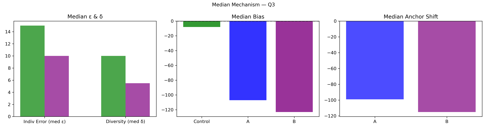

Question Q03: In HH:MM, how long will this year's WWDC keynote address be?
Super Summary
================================================================================
QUESTION Q03: 01_Pilot_stats_tIqZd2OC7X.csv
In HH:MM, how long will this year's WWDC keynote address be?
Truth = 135.0
N_ctrl = 171 N_ext = 106
================================================================================
[1] COLLECTIVE ERROR (E)
Control Ec: 38.4400 ± 23.2741
CI = [ 3.7453 , 89.6448 ]
Extremized Ex: 5.6117 ± 1.1241
CI = [ 3.2830 , 7.6509 ]
Difference (Ec - Ex) = 32.8283
Percent Change = 85.40%
Bootstrap:
P(Ex < Ec) = 0.9610
→ 96.1% of samples show extremized < control
[2] INDIVIDUAL ERROR (ε)
Control mean ε = 59.5380
Extremized ε = 10.5189
Percent Change = -82.33%
Welch t-test: t = 2.776, p = 0.006124
Cohen's d = 0.270
[3] DIVERSITY (δ)
Control SD = 234.5362
Extremized SD = 11.6705
Percent Change = -95.02%
Levene p = 0.02772
[4] ANCHOR DIAGNOSTICS
Anchor A = 139.0
Anchor B = 123.0
A_effective = True
B_effective = True
[5] EQUATION 6 CHECK
w_L = 0.9944 w_H = 1.1213
Delta = 72.4062
Criterion_L = True Criterion_H = True
Meets both = True
[6] δ–ε–E SCENARIO
Scenario: δ:down, ε:down, E:down
Mechanism Explanation: Calibration: anchors pull predictions inward toward the truth, reducing both individual error and diversity and improving collective accuracy.
================================================================================
FINAL INTERPRETATION (with actual figures)
================================================================================
For Q3, collective error shifted from 38.44 to 5.61 (85.40%). Bootstrap = 96.1%. Individual error changed by -82.33%, diversity changed by -95.02%. Scenario = δ:down, ε:down, E:down. Equation 6 feasibility = True.
================================================================================
Median Mechanism Plot
